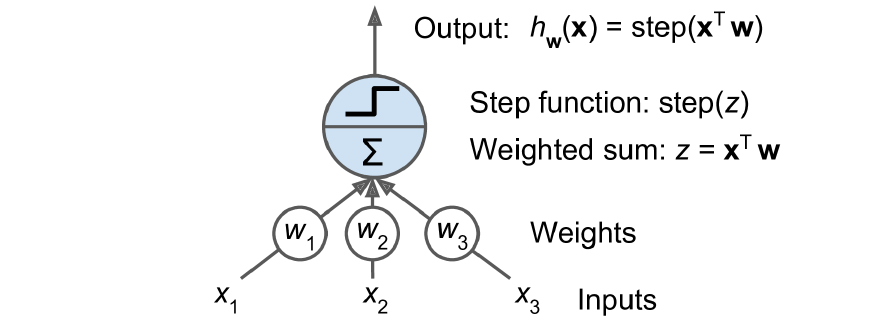
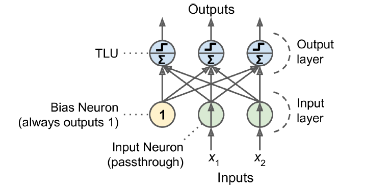
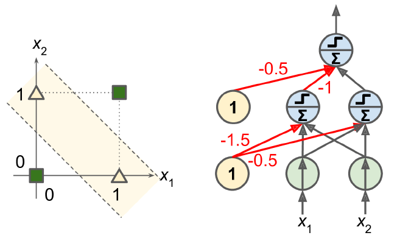

12.1 Neural Networks and the Perceptron
A linear threshold unit, and what it cannot do.
These notes walk through the lecture slides. The original deck is unchanged; use (slides) on the course hub if you want that PDF.
Figures and notes follow Géron, Hands-On Machine Learning; Deisenroth, Faisal, and Ong, Mathematics for Machine Learning; and Theodoridis.
1. A short history
Artificial neural networks (ANNs) start in 1943: McCulloch and Pitts modeled biological neurons with propositional logic.
Interest came back in the 1980s (connectionism), then faded in the 1990s when methods such as support vector machines looked stronger on both results and theory.
Geoffrey Hinton, Yoshua Bengio, and Yann LeCun received the 2018 Turing Award for neural-network work.
Why another wave now?
- Huge data: ANNs often win on large, messy problems.
- Compute: Moore’s law, and GPUs from the gaming industry.
- Better training algorithms.
- A virtuous circle: products draw funding, funding draws progress.
2. Applications
| Area | What nets are used for |
|---|---|
| Image recognition | Detection, faces, classification |
| NLP | Translation, sentiment, text generation |
| Medical diagnosis | X-rays, MRIs |
| Speech | Speech-to-text, assistants |
| Drug discovery | Candidates and predicted properties |
3. The perceptron
Frank Rosenblatt, 1957. Built from a threshold logic unit (TLU) (also linear threshold unit, LTU). Inputs and output are numbers. Each input has a weight. The TLU takes a weighted sum
then a step function: .

The usual step is the Heaviside step. One TLU is a linear binary classifier: positive class if exceeds a threshold, else negative. Same geometry as logistic regression, different output.
A perceptron is one layer of TLUs, each tied to every input. When every neuron in a layer connects to every neuron in the previous layer, that layer is fully connected (dense).

4. How a perceptron is trained
Löwel’s phrase: cells that fire together, wire together. Present one training pair at a time. If an output neuron is wrong, strengthen the input weights that would have helped the right answer.
Training set for . At iteration you see . For a single output layer, if that point is misclassified by ,
and if it is classified correctly,
is the learning rate.
Each output neuron has a linear decision boundary, so a perceptron cannot learn complex patterns (same limit as logistic regression). If the training points are linearly separable, the algorithm converges: the perceptron convergence theorem. After convergence you have weights, and you predict with those weights.
A perceptron does not output a class probability. It thresholds. That is one reason to prefer logistic regression when you want a probability.
5. XOR and the multi-layer perceptron
Minsky and Papert (Perceptrons, 1969) stressed a hard limit: a perceptron cannot solve XOR. Stack perceptrons and the limit goes away. The stack is a multi-layer perceptron (MLP).

Practice
-
What does a hidden layer buy you that a perceptron cannot do?
-
A perceptron and logistic regression can share a linear boundary. What does logistic regression return that a perceptron does not?
-
The training set is linearly separable. What does the perceptron convergence theorem say will happen?